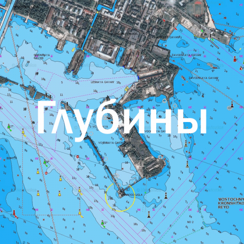

Карты нужны не только сухопутным путешественникам, но также и тем, кто любит бороздить просторы водоёмов на своём собственном судне. С одной стороны, должно быть достаточно знания того, какую площадь занимает вода, знать карту береговой линии, а также руководствоваться компасом. Но также очень важна и карта глубин водоёмов, без которой ни один современный моряк не уйдёт в плаванье. Создать карту глубин водоёма без особого оборудования чрезвычайно сложно. Но всё равно это было намного лучше, чем садиться на мель каждый раз, пытаясь проплыть, доверяя собственной интуиции.
Какие ещё преимущества даёт речная навигационная карта
Она будет очень полезна при навигации на судах для путешествий и для занятия рыбной ловлей, потому что именно на перепадах глубин часто находится самая желанная добыча. Можно иметь при себе специальный измерительный инструмент, но он не даст точного результата, так же, как и портативный эхолот. Эти приборы могут ошибаться, принимая за дно большой куст водорослей или плотный рыбный косяк. Электронная речная навигационная карта должна быть обязательно загружена в личное устройство для навигации, при отправке в многодневное путешествие по воде. Многие любители такого отдыха и приключений считают, что карта не нужна, потому что можно и без неё сориентироваться. Но это до тех пор, пока не наступила ночь, а также при идеальных погодных условиях. В туман или сильный дождь можно запросто сесть на скалу или на мель.
Поэтому можно утверждать, что навигационные карты глубин являются строго необходимыми для всех, даже для рыбаков или прогулочных лодок, которые отправляются недалеко от берега. Мы также подготавливаем карты морей и океанов, которые позволят ориентироваться судам вдали от берега.
Сколько стоят такие карты
Цена на карты находится на оптимальном обоснованном уровне. Электронная продукция может быть загружена в навигаторы фирмы Garmin, которые обладают высокой точностью. Купить морские навигационные карты тем более необходимо, потому что без них можно нарушить территориальные водные границы, что может быть чревато задержанием или даже изъятием плавательного средства. На таких картах обязательно указаны потенциально опасные для малых суден места, такие как фарватеры для крупных кораблей, мели или же водовороты.
Карты глубин судоходных водоемов для навигаторов и картплоттеров GARMIN, LOWRANCE.
Высокодетализированный Рельеф дна с точными глубинами. Могут быть совмещены со спутниковой съемкой.

Подготовлено для туристических навигаторов и картплоттеров Garmin, LOWRANCE, телефонов и планшетов ANDROID, авто навигаторов на Windows CE. Стоимость одной область (субъект Российской Федерации) 3000 рублей, при единовременной покупке нескольких карт (областей) - последующие по 1500р. Полное покрытие карт Генштаба и Спутника по всему миру. Карты глубин только судоходных водоемов
Компания NaviGarin специализируется на картографической продукции. Для того, чтобы клиенты были заинтересованы в нашем товаре, база данных карт постоянно пополняется новыми образцами, которые окажутся полезными как для хобби, так и для работы. Современные спутниковые снимки, исторические карты и военные картографические документы – всё это теперь доступно каждому желающему. Мы гарантируем высочайшую точность привязки и лучшее качество в каждом из масштабов. Электронная продукция, которую мы реализуем, не представлена ни на одном бесплатном сайте. Это уникальные карты, которые были найдены в архивах в результате длительных поисков, а затем сопряжены с картами для навигаторов.